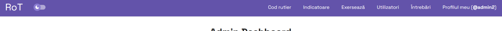
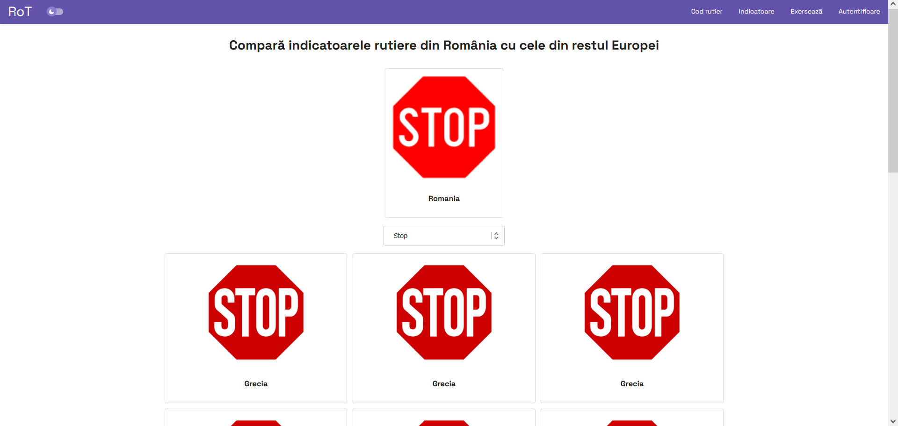

2. Rezumat
Proiectul RoT (Romanian Traffic Signs Tutor) este o aplicație web dedicată învățării semnelor rutiere și a regulilor de circulație în România și alte țări europene. Utilizatorii se pot informa, prin intermediul aplicației, despre Codul Rutier valabil în România și despre toate categoriile de indicatoare din țară. De asemenea, pot fi comparate indicatoarele din România cu echivalentele lor din alte țări. Utilizatorii își pot testa apoi cunoștințele prin intermediul întrebărilor de pe site, formulate într-un stil similar celor oficiale din chestionarele auto din România. Pentru oferirea informațiilor se va dezvolta un API REST propriu, care va fi folosit de aplicația web pentru afișarea informațiilor relevante într-un mod dinamic.
2. Introducere
2.1. Scop
Scopul acestui document este de a specifica cerințele pentru RoT (Romanian Traffic Signs Tutor), aplicație web destinată învățării regulilor de circulație. Acest document descrie obiectivele, funcționalitățile și constrângerile proiectului.
2.2. Convenții ale documentului
Fontul utilizat în acest document este Arial. Termenii importanți din cadrul listelor vor fi evidențiați în bold.
2.3. Publicul vizat și sugestii de lectură
Acest document este destinat dezvoltatorilor, testerilor și managerilor de proiect. Dezvoltatorii ar trebui să se concentreze pe secțiunile relevante pentru implementarea aplicației (CARE SECTIUNI?), în timp ce testerii ar trebui să acorde atenție cerințelor de testare (CARE SECTIUNI?). Managerii de proiect (CARE SECTIUNI?)
2.4. Domeniul de aplicare al produsului
Produsul are următoarele scopuri:
- Oferirea unei interfețe intuitive, ușor de înțeles și navigat pentru utilizatori.
- Acces ușor la informații despre semnele rutiere și Codul Rutier.
- Oferirea unei game variate de funcționalități, inclusiv vizualizarea semnelor rutiere, compararea cu alte semne din Europa, înțelegerea semnificației lor și testarea cunoștințelor prin teste practice.
- Promovarea educației rutiere prin intermediul unei platforme interactive și captivante, care încurajează învățarea activă prin întrebări, chestionare și competiție cu alți utilizatori.
2.5. Referințe
nu stiu inca, vedem la sfarsit. desi nu pare a fi cazul la noi:
"List any other documents or Web addresses to which this SRS refers. These may include user interface style guides, contracts, standards, system requirements specifications, use case documents, or a vision and scope document. Provide enough information so that the reader could access a copy of each reference, including title, author, version number, date, and source or location."
3. Descriere generală
3.1. Perspectiva produsului
Produsul specificat în acest document este un site web independent. Componentele principale ale acestuia sunt:
-
Frontend (partea vizibilă a aplicației), componentă dezvoltată cu ajutorul HTML, SCSS și JavaScript, expunând interfața efectivă prin care utilizatorul interacționează cu aplicația;
-
Backend, componentă responsabilă de manipularea datelor din aplicație, care include servicii ale aplicației și modalități de gestionare a bazei de date;
-
API-ul (interfața de programare a aplicației) implementat conform protocolului REST, componentă care facilitează transmiterea de date între frontend și backend;
-
Baza de date, componentă cu ajutorul căreia sunt stocate datele referitoare la utilizatorii aplicației și progresul lor în procesul de învățare (întrebările la care a răspuns corect, numărul de chestionare la care a obținut calificativul "Admis", etc)
3.2. Funcțiile produsului
Funcționalitățile principale ale site-ului sunt:
- oferirea textului Codului Rutier aplicabil în România
- oferirea de informații despre indicatoare și categorii de indicatoare din România
- compararea unui indicator din România cu echivalentele sale din alte țări din Europa
- răspunderea la întrebări și generarea de chestionare
- vizualizarea Leaderboard-ului (scorurilor obținute), unde sunt afișați cei mai sârguincioși utilizatori
3.3. Clase și caracteristici de utilizatori
Există diverse tipuri de utilizatori care ar putea folosi aplicația RoT:
-
Utilizatori în procesul de a obține permisul de conducere: această clasă include persoanele interesate de învățarea semnelor rutiere și a regulilor de circulație pentru a trece de examenul teoretic auto din România și pentru a deveni șoferi responsabili. Acești utilizatori pot avea diferite nivele de cunoștințe teoretice.
-
Instructori auto: instructorii de conducere sau școlile de șoferi pot utiliza site-ul RoT pentru a oferi materiale suplimentare de învățare și exerciții cursanților.
-
Utilizatori pasionați: această clasă poate include persoanele cu interese în domeniul rutier, precum activiștii pentru siguranța în trafic sau persoanele pasionate, fie șoferi sau pietoni.
-
Administratorii site-ului: întrucât baza de date cu utilizatori a site-ului poate fi administrată prin intermediul unui modul specializat, Admin Dashboard, administratorii pot utiliza în mod direct site-ul în acest scop.
3.4. Mediul de rulare
Vedem la sfarsit daca ne trebuie...
3.5. Constrângeri de proiectare și implementare
În timpul dezvoltării proiectului se vor lua în calcul următoarele constrângeri:
-
Limitări hardware: este nevoie de o viteză adecvată a serverului web pentru a prelua și transmite date către utilizatori.
-
Tehnologii specifice: pentru a dezvolta site-ul sunt necesare cunoștințe și experiență în tehnologii precum HTML, CSS, preprocesorul SCSS, JavaScript, PHP, protocolul REST pentru API, operarea de date în format XML sau JSON, baze de date relaționale, ș.a.m.d.
-
Compatibilitate software: aplicația trebuie să fie compatibilă cu diverse sisteme de operare și browsere web. Trebuie să se asigure că aplicația funcționează corect pe o varietate de platforme software și versiuni, inclusiv Windows, macOS, Linux, iOS și Android, utilizând browsere web populare cum ar fi Google Chrome, Mozilla Firefox, Safari și Microsoft Edge.
-
Design "responsive" și accesibil: întrucât site-ul trebuie să poată fi utilizabil pe diverse dispozitive, la desktop-uri la telefoane mobile, interfața acestuia trebuie să fie proiectată având în vedere diverse dimensiuni ale ecranului și diverse cerințe de accesibilitate, astfel încât interacțiunea utilizatorului cu site-ul să fie cât mai fluidă.
-
Măsuri de securitate: întrucât site-ul va deține informații sensibile despre utilizatorii acestuia, se vor avea în vedere măsuri suplimentare de securizare a datelor și a site-ului, precum criptarea datelor, autorizarea utilizatorilor, testarea împotriva vulnerabilităților comune precum injecții SQL sau Cross-Site Scripting, etc.
3.6. Documentația utilizatorului
Utilizatorul are la dispoziție pagina Ajutor (Help), inclusă în site-ul web și accesibilă din footer (partea de jos) de pe oricare pagină de pe site. Pe această pagină se regăsesc informații despre navigarea site-ului și funcționalitățile acestuia, în format Frequently Asked Questions (Întrebări frecvente). De asemenea, utilizatorul poate consulta secțiunea Interfețe pentru utilizator pentru a înțelege în detaliu cum poate fi navigată aplicația.
4. Cerințe externe de interfață
4.1. Interfețe pentru utilizator
Utilizatorul poate interacționa cu aplicația RoT prin diversele interfețe puse la dispoziție.
-
Bara de navigație este prezentă pe toate paginile proiectului și conține diverse link-uri utile pentru utilizator. Acestea sunt dinamice în funcție de statusul utilizatorului (nelogat, logat în cont de utilizator, logat în cont de administrator). Bara conține și un "dark switch", menit să fie folosit pentru a activa modul întunecat al aplicației. De asemenea, bara este adaptabilă în funcție de dimensiunea ecranului (spre exemplu, desktop vs. mobil).

-
Footer-ul este prezent pe toate paginile proiectului și conține link-uri la pagini precum Despre noi (About), Ajutor (Help), și altele.
-
Pagina index introduce utilizatorul în aplicație și oferă link-uri către paginile importante ale aplicației (Despre noi, Ajutor, Cod Rutier, Indicatoare, Exersează).
-
Pagina Despre noi prezintă informații despre motivația aplicației și despre autorii acesteia.
-
Pe pagina Help se regăsesc explicații despre cum trebuie navigată aplicația, prezentate în formatul Frequently Asked Questions (Întrebări frecvente).
-
Pagina Cod rutier conține o listă de capitole din Codul Rutier. Această pagină poate fi accesată chiar dacă utilizatorul nu este înregistrat.
-
Fiecărui capitol din Codul Rutier îi corespunde o pagină de tip Capitol care afișează conținutul textual al capitolului. Aceste pagini pot fi accesate chiar dacă utilizatorul nu este înregistrat.
-
Pagina Indicatoare conține o listă de categorii de indicatoare din România. Această pagină poate fi accesată chiar dacă utilizatorul nu este înregistrat. Pe această pagină se află și un link către pagina Compară, detaliată mai jos.
-
Pagina Categorie de indicatoare cuprinde informații despre o categorie selectată de indicatoare rutiere și o listă cu toate indicatoarele care se află sub acea categorie.
-
Pagina Compară oferă o interfață atractivă prin care pot fi comparate aspectual indicatoare din România cu echivalentele acestora din alte țări din Europa. Se va alege prin drop-down menu indicatorul dorit și apoi va apărea pe ecran atât indicatorul românesc, cât și cele din alte țări.

-
Pagina Exersează oferă la dispoziția utilizatorului abilitatea de a răspunde la întrebări pe site, cu scopul de a se pregăti pentru examenul auto. Dacă utilizatorul nu este autentificat, pagina va redirecta la cea de Autentificare. Utilizatorul are opțiunea de a răspunde la întrebări fără a fi cronometrat, sau de a genera un chestionar, unde acesta va răspunde la 26 de întrebări în limita de 30 de minute, la fel ca la chestionarul auto din România. De asemenea, utilizatorul poate alege să răspundă la întrebări doar dintr-o anumită categorie (de exemplu, Indicatoare, Sancțiuni și infracțiuni, Conducerea preventivă, etc).
-
INTREBARI SI INTREBARI CHESTIONAR
-
LEADERBOARD
-
Pentru a se autentifica în aplicație, utilizatorul poate apăsa pe link-ul "Autentificare" din bara de navigație care îl va conduce către pagina Autentificare, unde își poate introduce email-ul și parola utilizate la crearea contului. De asemenea, dacă cel care dorește să se autentifice și-a uitat parola, acesta poate apăsa pe "Resetează parola", moment în care va fi redirectat la o pagină unde își poate introduce adresa de email pentru a își reseta parola.

În cazul în care utilizatorul nu are un cont în aplicație, acesta poate apăsa pe link-ul "Înregistrează-te", care îl va conduce la pagina Înregistrare, unde își poate introduce adresa de email, parola dorită, și username-ul (numele de utilizator) dorit.
-
RESET P2
-
Profil
-
Detaliem pagini resetari. aici va redirecta si aia cu loginu
-
Admin dashboard. care cred ca e si ultima din lista asta
4.2. Interfețe hardware
Dispozitivele care vor putea utiliza aplicația sunt:
-
Desktop-uri și laptop-uri cu un browser web și acces la Internet;
-
Telefoane mobile și tablete cu un browser web și access la Internet.
Interacțiunea dintre software și hardware va avea loc prin intermediul browser-ului web prin care este accesat site-ul web. Se va putea interacționa cu site-ul prin intermediul mouse-ului și tastaturii (în cazul desktop-urilor și laptop-urilor) sau a ecranului (în cazul tabletelor și telefoanelor mobile).
Protocolul de comunicare utilizat pentru interacțiunea utilizatorului cu site-ul este HTTP.
4.3. Interfețe software
La nivel software, aplicația este împărțită în componentele amintite în secțiunea Perspectiva produsului. Acestea vor interacționa între ele astfel:
-
Baza de date, de tip relațional, conține datele propriu-zise ale aplicației (Codul Rutier, indicatoarele și categoriile asociate, imaginile corespunzătoare, întrebările de tip chestionar), dar și datele despre utilizatorii aplicației.
-
Backend-ul este scris în limbajul de programare PHP. Acesta oferă către client componenta frontend a aplicației prin browser-ul web prin intermediul unui API de tip REST, și comunică cu baza de date în privința obținerii datelor, la cererea frontend-ului, în funcție de interacțiunea utilizatorilor cu site-ul.
-
Frontend-ul este scris folosind HTML, CSS și preprocesorul SCSS în baza metodologiei BEM, și JavaScript. Interacțiunea efectivă a utilizatorilor cu aplicația se face prin intermediul frontend-ului. Acesta comunică cu backend-ul prin intermediul API-ului amintit anterior.
4.4. Interfețe de comunicare
Se vor utiliza următoarele modalități de comunicare:
-
comunicare prin email, pentru înregistrarea de utilizatori și resetarea informațiilor personale la cerere;
-
comunicare prin HTTP într-un browser web, pentru transmiterea de date atât de la server web la utilizator, cât și între frontend și backend;
-
comunicare prin interfața API REST, pentru a transmite informații cerute de utilizatori;
-
comunicare printr-un feed RSS, prin care utilizatorii pot urmări lista de utilizatori care se află în topul site-ului prin procentul de întrebări la care au răspuns corect.
Protocolul de comunicare care stă la baza aplicației este HTTP.
Din punct de vedere al securității se vor implementa diverse măsuri, precum criptarea datelor, autentificarea și autorizarea utilizatorilor, protejarea împotriva a diverse vulnerabilități comune, etc.